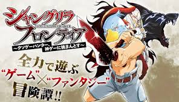
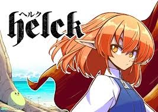

おすすめの漫画
ここでは私のおすすめの漫画を紹介します。
シャングリラ・フロンティア
この作品は世間一般でクソゲーと呼ばれるゲームを好んでプレイしている主人公が
これまでやってきたゲームの知識や経験を使って世界中の人が神ゲーと呼んでいるゲームを攻略していく物語です。
この作品の魅力は、主人公が単純に無双するだけの話しではなく、試行錯誤して時にはゲームの穴を突いたりして攻略していくところです。

Helck
この作品は魔王が1人の勇者に倒され新しい魔王を決める大会を開催するところから物語が始まります。
人間の勇者に対抗するために強い魔王を選抜しているのにそこに人間の勇者が参加してしまいます。
大会の責任者であるヴァミリオは人間の参加は認めず勇者を妨害しますがことごとく失敗に終わります。
決勝戦の最中に突如出現したゲートによりヴァミリオと勇者はゲートに吸い込まれてしまい孤島に飛ばされてしまいます。
勇者に不信感を抱きながらも共に魔界に帰るという話になっています。
この作品の魅力はヴァミリオと勇者のギャグシーンと時折出てくるちょっとしたホラーやシリアスの差が激しいところです。
